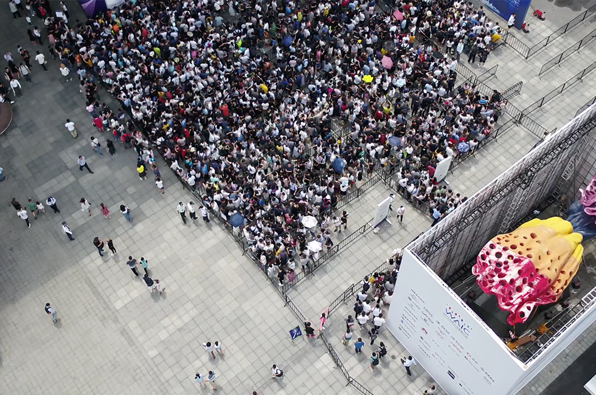

方案场景
警用安防巡逻系统可实现无人值守，实时发现异常场景，突发事件迅速应急处理
警用安防无人机全自动巡逻
场景描述
- 警用场景是无人机落地的重要领域之一。近年来，我国各地公安部门已利用无人机辅助执法，缓解治安、安保压力；而今年受疫情影响，无人机更是成为了警务人员们抗疫的重要工具。
- 不过众所周知，无人机应用的背后离不开专业飞手！但目前飞手的数量和质量都普遍不高。不少警务部门虽然有专人操纵和驾驶无人机，但由于编制、预算等综合原因，专业的人才培养和充足的人员配置仍停留在初级阶段。这显然不利于警用无人机效用的最大化发挥。

使用产品
-
MindCube 智方A30系列
固定式无人机自动机场
+
- DJI-M300 RTK +
-
 DJI-H20T
/
DJI-H20T
/
- DJI-Z30
-
MindCube 智方A30系列
移动式无人机自动机场
+
- DJI-M300 RTK +
-
DJI-H20T
/
- DJI-Z30
解决方案
- 固定式（或者移动式）无人机自动机场部署在重要治安巡逻区域，无巡逻任务时，无人机存储在机库中，有任务时，机械臂自动安装无人机电池并开启舱门，无人机自动飞出作业。
- 基于3D-GIS或二维地图，选择目标地点或巡逻区域，后台软件自动规划无人机飞行航线。
- 无人机通过图像识别技术实时对车辆、人员等特征目标进行精确定位，实时控制云台对目标进行跟踪拍摄，锁定车辆、人员等，通过图像识别精准拍摄。
- 无人机依据规划的飞行航迹，在RTK厘米级精度定位信号下进行复杂业务自主飞行，并根据航线预设目标，无人机在指定位置悬停，控制云台指向目标并进行目标拍摄、识别。
- 无人机巡逻视频实时回传，AI云平台实时匹配异常场景（嫌疑人员、嫌疑车辆、人员聚集等），分析人群行为、危险对象并自动告警上报警情位置与管辖区域，及时进行相应处理。
方案价值
-
作业环境 有效解决了专业飞手警员数量缺口大的问题，提高了日常巡逻的作业频次
-
提高效率 突发警情时可改变临时航线缩减出勤时间，大幅提高公安部门的应急处置能力
自动飞行赋能行业生产力
立即咨询